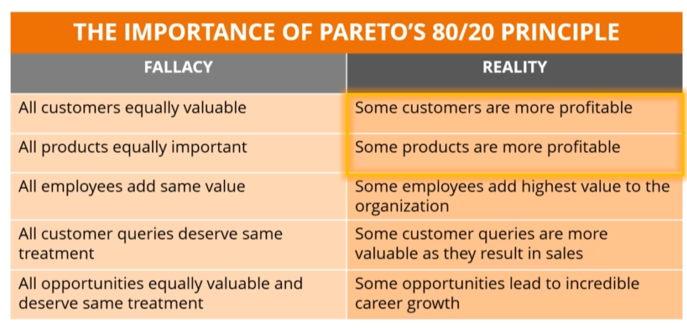
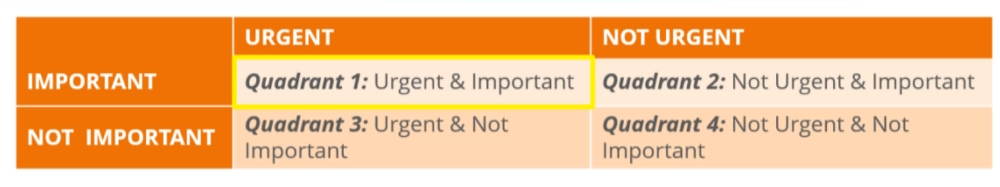

Career
References
Quotes
The real pros ask the real questions:
1)If
2)When
3)Why
4)What
5)How much have you got
6)Have you got it
7)Do you get it
8)If so, how often
9)Which do you choose, a hard or soft option
10)How much do you need?
C-Level
- Position security as
sales enablement
- Security needed to reduce sales cycle (align with business requirements)
- Evaluate security risks in context of business risk (holistic)
- Process vs problem
Jobs Hunting
- https://www.linkedin.com/posts/jasonsblanchard_job-hunting-slides-from-webcast-521-activity-6669260088525508608-zvRe
- Identify the code that you do and build an elevated statement about you. Example: https://www.linkedin.com/in/jasonsblanchard/
- Think about what people pay you to do. (I break things to improve them... I protect companies from cyber attacks...)
- Have dream job requirements. Your list of things required from an employer. and rank those.
- Management style / Leave policy
- Budget and determine what is the enough salary
- Top 10 companies that you need to work in
- Hunt types:
- Top 10
- Discovery
- Internal: Within current company
- Document as you go
- Creating resume while hunting
- Extract things from job listings, etc. into resume
- Resume
- Take 10 minutes of time from an manager and get more info about company structure / values, etc.
- Look at who is working in company
- Pivot and escalate to different ppl. Look for internal advocates.
- Network with community
- Find mentors
- Lean how they got to where they got to.
- Ask questions about them without trying to shine at first.
- Hook -
- ... [complete this from slides]
- ...
- The Dip (book)
Technical Recall
- Within 24 hours review material again for 30 mins (to increase retention to 100% again)
- 48 hours later, review again for 25 minutes (back to 100%)
- Each subsequent review takes less time and increase the retention
- A longer review interval leads to stronger recall skills
- Review intervals need to be short enough to recall concepts with minimal review time
- Anki - Free flash card app (spaced repetition training)
- Can judge and rate yourself.
- Questions that are hard will be displayed more.
- When creating card, change
Basic type to Closed type.
Tools Managed Node Types Fields. Add new field called Visual. - ???? (webinar disconnected)
- Motivation:
- Enjoyment: finding enjoyment in your topic to motivate.
- Methods: a method (spaced repetition/anki) gives you a task and a clear completion target.
- System: Habit development is necessary.
- Patience: Frustration is a normal and valuable part of learning.
- Problem of Time:
- Revisit goals and see if it's worth investing time.
- Changes that can be made to life.
- https://sansurl.com/504-lab-ankicards
- pptxindex.py
Time Management
- Time Traps
- Multitasking
- Attention is also divided
- Doubles time taken / mistakes
- Example: Round1: Write A-Z and 1-20. Round2: Do the same, but write one letter and then write one number (zigzag).
- Forces brain to context switch (human brain is not wired for this)
- Choose single key task for the day (organize time around it). Ksy task is the priority.
- Techno Time Traps (Ex: Social Media)
- Procrastination
- Delay in taking action until last minute
- Due to:
- Distractions
- Unpleasant Tasks
- Low self-esteem and lack of confidence
- Setting goals/deadlines in distant future
- Perfectionism
- Overcome:
- Set goals and deadlines
- Break into smaller tasks
- Check off smaller tasks (confidence boost)
- If not-confident: Visualize future you want
- Write costs of continued inaction and its impact to life
- Workspace Interruptions
- Politely say 'no'
- Use 'Do not disturb' message
- Take control of conversation and end smoothly
- Disorganization
- Setup schedules
- Setup reminders
- Stick to schedules
- Lack of Planing and Prioritization
- Plan and set daily goals
- Prioritize important tasks
- Group similar tasks together and handle together
- Achieving Work Life Balance
- Identify your peak time by analyzing energy through day
- Schedule important, complex tasks at peek time
- Warren Buffett's Productivity Secret
- Say 'no' to not important things
- Two list system
- Write 25 tasks you want to get done in the day
- Circle 5 most important
- Rule out other 20 items
- Parkinson's Law of Productivity
- 'Work expands to fill the time available for its completion'
- If 5 days is given to a 2 day task, task will grown into 5 days. Example: fine-tuning.
- Steps:
- Identify tasks do be done. Assign right amount of time for tasks.
- Set realistic deadlines
- Focus on getting task done within deadline
- Understand when you are done
- Time Theming
- Give each day a theme. Have focus on it and return to it when distracted.
- Easy to prioritize and focus.
- Similar tasks get grouped.
- Pareto's 80/20 Rule
- 80% of your output comes from 20% of your effort
- Remaining 20% of your output comes from 80% of your effort
- Identify 20% of high payoff tasks - This will generate 80% of results
- 
- Eat a Live Frog for Breakfast (eat the largest frog first)
- That is probably the worst thing that is going to happen for the day. Hence rest of the day feels better.
- Live frog:
- Biggest most important task of the list
- Task you'd most likely to procrastinate
- Task most likely to add more value to career
- Stephen Covey's Time Management Matrix
- Urgent task: Requires immediate attention
- Important task: Has to be done, but not immediately.
- 
- Q1: Quadrant of necessities
- Crisis situations
- Urgent problems
- Emergencies
- Deadline driven problems
- Q2: Activities related to long term strategizing - Very important since this is about long term growth
- Relationship building
- Personal Development
- Capitalizing on new opportunities
- Health
- Education
- Exercise
- Career Growth
- Q3: (Eliminate)
- Interruptions
- Unnecessary meetings
- Q4:
- Traditional time wasting tasks (calls / emails)
- Habitual tasks
- Delegation
- Help others grow
- Decrease your workload
- When to delegate?
- Can someone else do the task? Task on which long term success depends, need your attention.
- Does task provide opportunity to grown and develop another person.
- Is this a recurring task? Can I train someone?
- Do you have enough time to delegate the task effectively?
- Training
- Q&A
- Opportunity to check on progress
- Rework if necessary
- Effective Delegation
- Set expectations
- Communicate expectations
- Schedules/timelines
- Frequency and format of updates
- Ask the person to confirm understanding
- Ensure accountability
- Avoid reverse delegation
- Why?
- Task not through through
- Unclear communication
- Inadequate coaching
- What to do?
- Never accept back tasks
- Coach the employee instead
- Employee should be able to handle similar tasks in future
- Creating a Schedule
- Daily / Weekly Schedules
- Create a todo list
- Allocate a time needed to complete
- Work out the order and assign start-time
- Add cushion time to task or daily schedule
- Habits for Time Management
- Power of positive affirmations
- Programming your subconscious mind using positive self-talk
- Repeating send positive affirmations from conscious mind to subconscious mind
- Affirmations become the new operation instructions of subconscious mind
- Ex: "I manage my time effectively to achieve work life balance and improve quality of my life"
- Positive Psychology
- Thoughts + Beliefs = Reality
- Power of positive visualization
- Creating mental images in mind
- Mental images influence subconscious mind
- You will become the person you visualize in mind
- How?
- Choose a quite and secluded spot
- Choose the present moment (do not say "I will become")
- 10 Habits
- Habit 1 – Work Smarter Not Harder
- Give careful thought
- Can it be done efficiently
- Can other tasks be grouped
- Can it/part be delegated
- Can the task be eliminated
- Habit 2 – Cultivate Discipline and Focus
- Chalk out clear priorities
- Focus on the priorities (stick to)
- Select most valuable and important task
- Shut out all distractions
- Habit 3 – Develop the Habit of Punctuality
- Aim to finish before time
- Before time all the time
- Habit 4 – Take Frequent Breaks
- Take time for self-renewal
- Physical
- Social/emotional
- Mental
- Spiritual
- Habit 5 – Use Spare Minutes for Filler Tasks
- Have list of filler tasks ready
- Habit 6 – Learn to Say ‘No’
- Habit 7 – Start Your Day Early
- Habit 8 – Sleep 7 to 8 Hours a Day
- Habit 9 – Have a Cut-off Time for Tasks
- Intercept meetings
- Cut off a task your are working on
- Reschedule and unfinished meeting or task to another time
- Habit 10 – Keep Track of Your Time
- Have a clock on a visible place